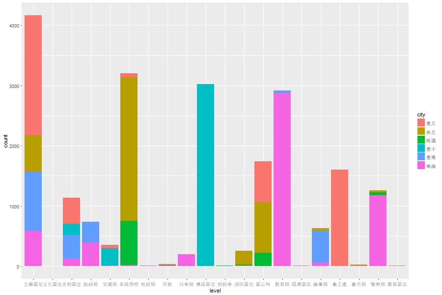
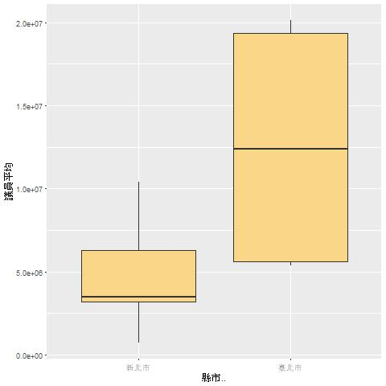
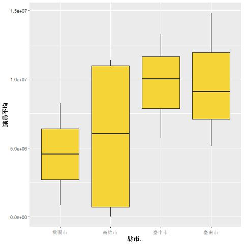

議員配合款常被詬病為議員的小型金庫，用於圖利地方特定廠商，淪為綁樁工具，成為執政者和監督者間利益交換的工具。
本文利用六大直轄市的配合款資料，分析的資金流向與運用。
從六都的資料來看，配合款的案件多為工程單位承辦，其次是各級學校,兩個單位都屬於財務採購或是工程案，若未公開招標，存在著上下其手或是指定廠商的可能性。
其中以台北議員提出的案件數最多，案件的平均金額上最高，從分配單位來看，使用台北配合款前四大單位為一般工程單位、衛公處、區公所和水利單位，其中區公所業務也多為道路橋樑工程和綠化工程。
議員：63個
議員平均提出：12.8件配合款案
一個配合款案件平均花費：1,236,667元
議員：66個
議員平均提出：12.5件配合款案
一個配合款案件平均花費：647,600元
議員：60個
議員平均提出：1.43件配合款案
一個配合款案件平均花費：961,500元
議員：63個
議員平均提出：6.95件配合款案
一個配合款案件平均花費：507,667元
議員：57個
議員平均提出：2.79件配合款案
一個配合款案件平均花費：813,000元
議員：66個
議員平均提出：4.16件配合款案
一個配合款案件平均花費：758,000元
從配合款案件的總數上來看，台北市與新北市在2014年的案件數顯著增加，而當年為九合一選舉，議員較往年有更高的需求去獲取地方上穩定的支持，因此案件數走然上升。
對議員來說，配合款一方面可以回應地方上的建設需求以換取選票支持，另一方面，議員有跟廠商收取回扣的空間。
2013年，新竹爆發配合款弊案，前議員陳益桯涉嫌利用配合款與校方人員勾結書商與資訊設備商，從中獲取六成回扣，兩年獲利1,800萬元。
2011年，台南市議會無黨問政聯盟要求每名議員有1200萬到1500萬的工程配合款，遭到台南市長賴清德的拒絕，在當時造成市府與議會關係急凍。後台南市的配合款改為議員可以向政府提出建議，經政府單位評估需要後再執行。
賴清德表示，小型工程配合款的建設與修繕業務應委託給區公所辦理，議員可利用此機制提出建議，再由公所執行，無損於議員對選民的承諾。
國民黨執政的縣市每年平均有770個配合款案件，每筆配合款花費1,017,667元
國民黨執政時的台北，配合款總額和案件逐年增加， 但平均金額下滑。議員們隨著當任政府執政 越久，越容易提出配合款的要求。
國民黨執政時的新北，配合款總額在2014年達到高峰， 而2014年剛好是選舉年，議員們為了討好選民， 提出更多小型配合選要求。
民進黨執政的縣市每年平均有878個配合款案件，每筆配合款花費745,643元
民進黨執政時的高雄，配合款總額在2014年突然遽降， 原因是高雄市府大砍預算，並無編列配合選預算，僅在議員建議時才動用配合款。
在賴清德主張取消議員的小型工程配合款後，儘管台南還是有不少的配合款支出， 但總額也逐年下滑。